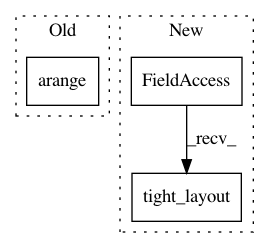

ba1182eeaaadb1805319166022128f4823f491f9,tslearn/docs/examples/plot_kmeans.py,,,#,20
Before Change
plt.subplot(2, 1, 2)
for xx, yy in zip(X, y_pred):
plt.plot(numpy.arange(128), xx, own_colors[yy] + "-")
plt.title("DBA $k$-means")
plt.show()
After Change
plt.plot(xx, own_colors[yy] + "-")
plt.title("Soft-DTW $k$-means")
plt.tight_layout()
plt.show()
In pattern: SUPERPATTERN
Frequency: 4
Non-data size: 3
Instances
Project Name: rtavenar/tslearn
Commit Name: ba1182eeaaadb1805319166022128f4823f491f9
Time: 2017-06-22
Author: romain.tavenard@univ-rennes2.fr
File Name: tslearn/docs/examples/plot_kmeans.py
Class Name:
Method Name:
Project Name: rtavenar/tslearn
Commit Name: ba1182eeaaadb1805319166022128f4823f491f9
Time: 2017-06-22
Author: romain.tavenard@univ-rennes2.fr
File Name: tslearn/docs/examples/plot_sax.py
Class Name:
Method Name:
Project Name: rtavenar/tslearn
Commit Name: ba1182eeaaadb1805319166022128f4823f491f9
Time: 2017-06-22
Author: romain.tavenard@univ-rennes2.fr
File Name: tslearn/docs/examples/plot_barycenters.py
Class Name:
Method Name:
Project Name: DistrictDataLabs/yellowbrick
Commit Name: e3419d1cfc6e94432e2f2709b9d9d377eaad872a
Time: 2018-03-18
Author: benjamin@bengfort.com
File Name: yellowbrick/classifier/classification_report.py
Class Name: ClassificationReport
Method Name: finalize